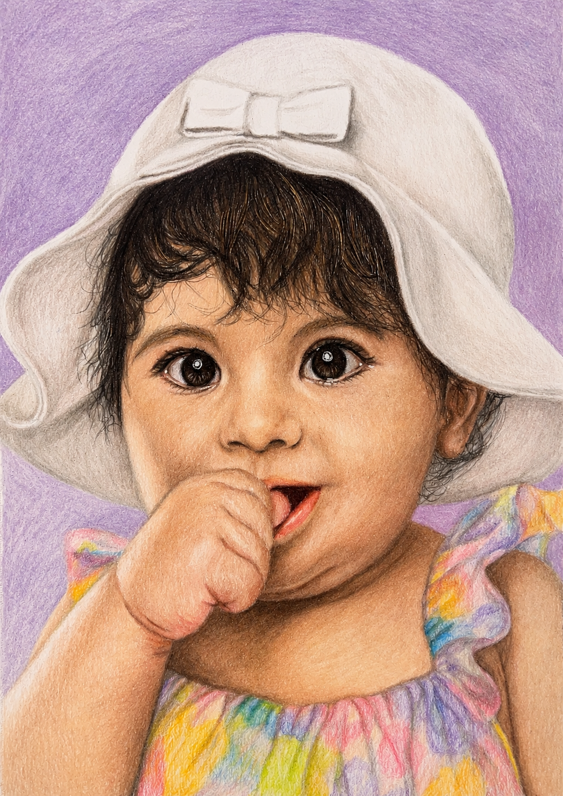
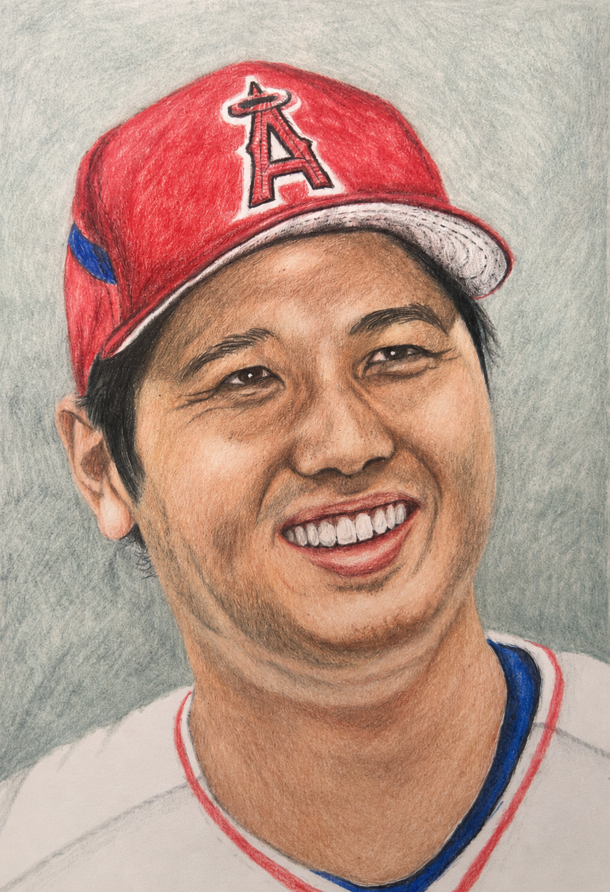
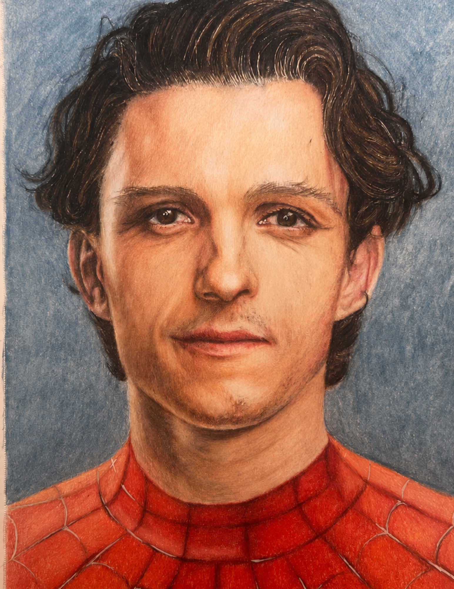
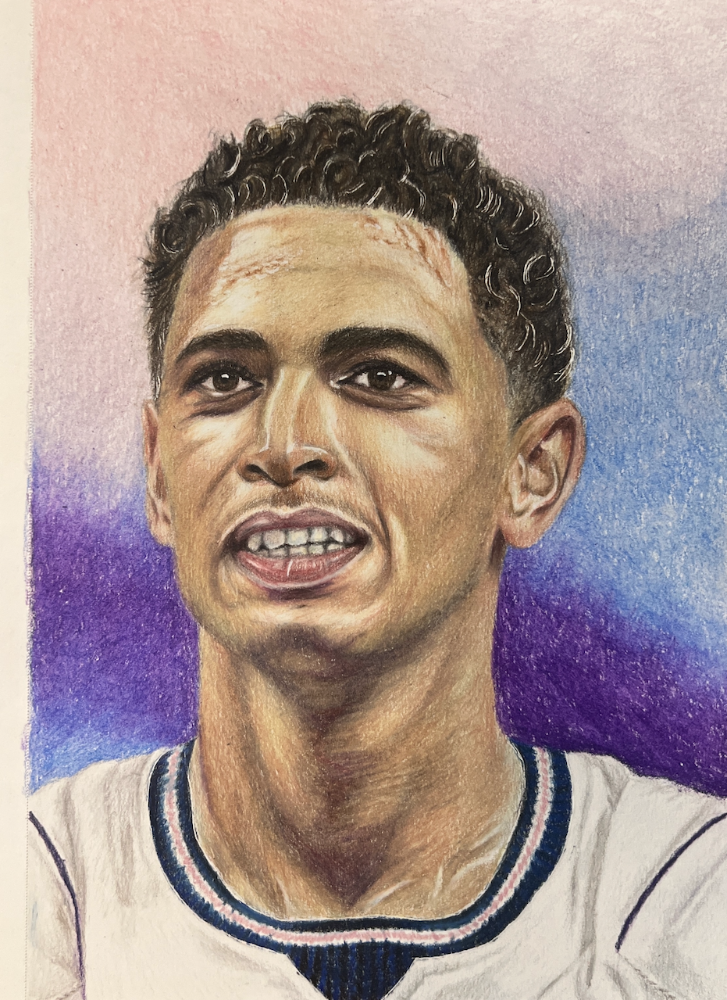
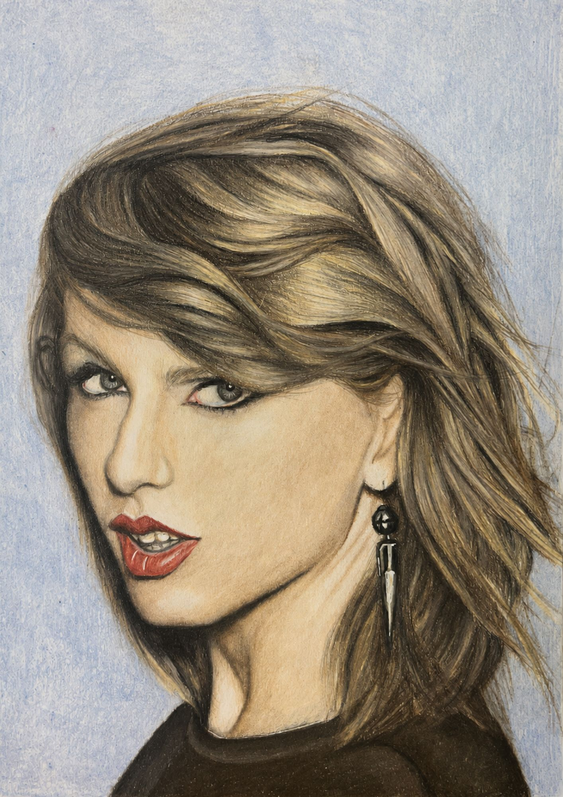
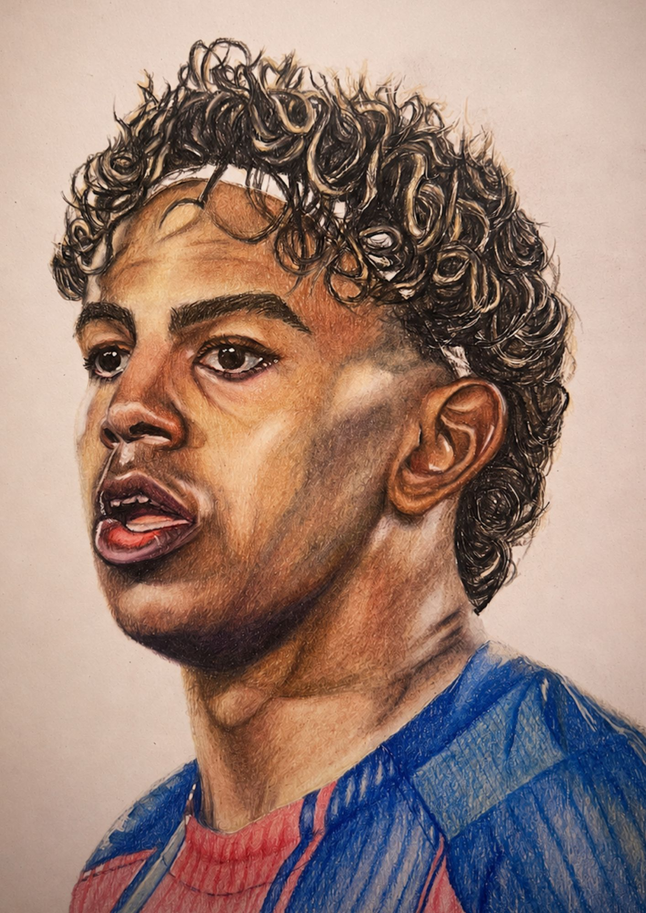
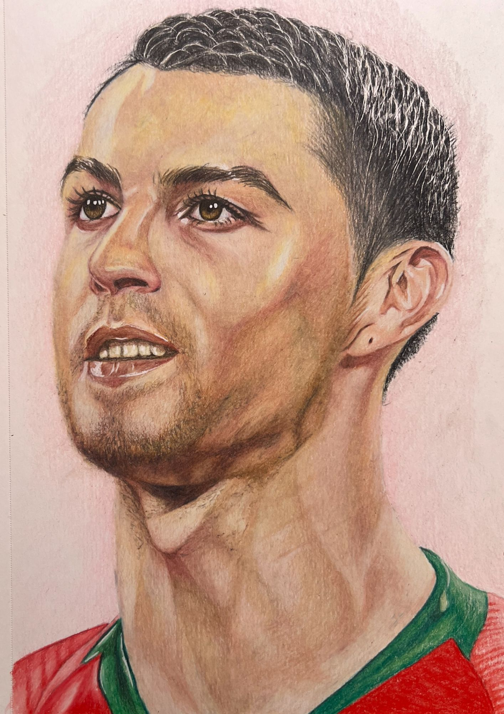
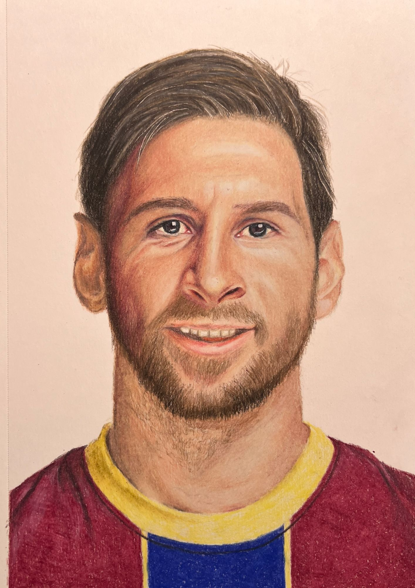
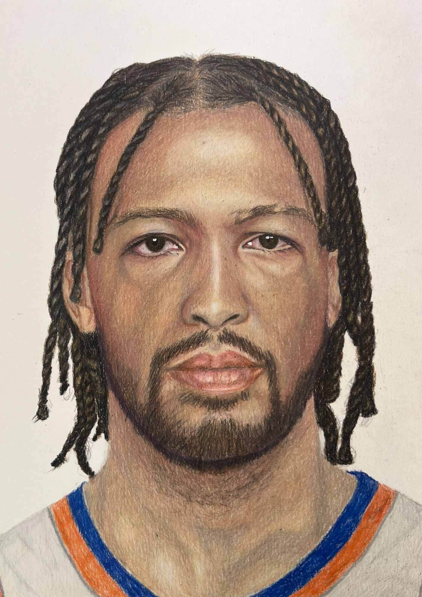
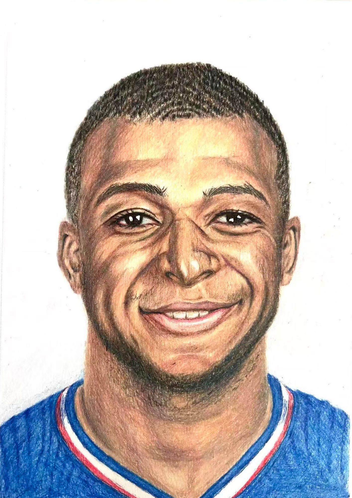

An AI writes the lesson.
I draw it by hand.
Then it grades me.
Every week: an AI analyses a reference photo and writes a step-by-step colored pencil lesson. I execute it — hours, not prompts. The finished drawing goes back to the AI, which rules HIT or MISS on one named target set the week before. Every guide here is free to download. No email, no checkout.
How it works
1 · LessonAn AI reads the reference photo and writes the step-by-step lesson — exact pencils, pressure, layers, stroke direction, and a stop condition for every stage.
2 · DrawingA human executes it by hand. Ten to fourteen hours per portrait. Nothing here is generated.
3 · VerdictThe finished drawing goes back to the AI. It rules on ONE named target set the week before: HIT or MISS. No scores, no flattery.
4 · LoopNext week's lesson is built from exactly what the critique caught. 4 HITs so far, and the misses stay on the page.
The work — every portrait, every verdict, every guide
10 graded portraits · 10 free guides available to download right now. Click any portrait for its verdict and its PDF.









Grade your own drawing
The recurring findings from every critique above, deduplicated into eight pass/fail checks you can hold your own portrait against — value, temperature, edge, structure, unification, calibration, saturation, texture. Not a score out of ten: a 7/10 teaches nothing.
Before the loop
The early work, kept up on purpose. This is what the drawings looked like before an AI started grading them.
FAQ
Can AI actually teach you to draw?
After 11 documented weeks: it can direct and grade practice — remarkably well. It names the specific flaw I keep avoiding and holds me to one target a week. What it can't do is replace the hours; week 9's catch was pure hand execution, and so was week 11's. The record above, misses and overcorrections included, is the honest answer so far.
How does an AI grade a hand-drawn portrait?
It compares the finished drawing against the reference photo and the lesson's stated goal, then rules on one specific target — likeness, values, form structure — in plain language. One binary verdict per week: HIT or MISS. Never a numeric score, because a "7/10" teaches nothing; "the away-side plane finally turns, but it went grey" does.
What happened after 11 weeks?
Two of the three long threads are closed. Patchy skin, flagged in week 5, was ruled closed in week 10. Flat, unsculpted faces — flagged in weeks 6, 7 and 10 — closed in week 11. What's left isn't a missing skill at all: it's a habit. Five separate weeks, the AI named a shadow and the correction went straight past the target. That's the whole current fight.
Why do my colored pencil portraits look flat?
On this record, almost never because there wasn't enough shadow. The cause was lit planes — forehead, nose bridge, cheekbone — never reaching a true peak highlight, so the face read as evenly filled instead of struck by a light source. Adding more dark made it muddier, not rounder. What finally closed it in week 11 was a hard value jump on those three planes plus gentle core shadow — which is the opposite instinct to the one most of us have.
Why do my colored pencil portraits look grey or muddy?
Because the shadows were built with neutral or cool darks. A real shadow still receives warm bounced light, so a dead-grey shadow reads as an absence of light rather than a form turning away. Glazing warmth into the shadow masses fixed it here. It showed up in weeks 6 and 9 — both times as an overcorrection to being told the darks were too hot — and has held clear in weeks 7, 10 and 11.
How is this different from AI art critique tools and rate-my-art apps?
Those tools grade an image once. They never find out whether the advice worked, because almost nobody returns with the same drawing corrected — so what they hold is advice issued, at scale. This page is the other shape: one person, one medium, every correction actually executed by hand and then re-graded the following week. What's published here is advice tested — including the weeks where following it made the drawing worse. It's a much smaller sample and a much slower one. It's also the part a tool can't produce.